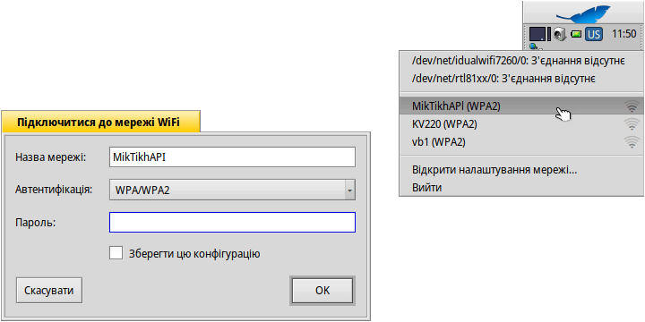

| Індекс |
|
Під'єднання до безпровідної мережі Під'єднання з командного рядка Забезпечення працездатності обладнання |
Майстер-клас: Безпровідні мережі
Налагодження якісної роботи мережі має важливе значення у сьогоднішній потребі постійного підключення до мережі Інтернет. Оскільки для невеликого проекту неможливо бути в курсі всього різноманітного обладнання та драйверів, які до того ж постійно змінюються, Haiku покладається на рівень сумісності, який дає можливість використання мережевих драйверів FreeBSD та деяких мережевих драйверів OpenBSD. Це забезпечує підтримку величезної кількості обладнання, хоча, ймовірно, і не на 100% від того, що існує.
 Під'єднання до безпровідної мережі
Під'єднання до безпровідної мережі
Щоб під’єднатися до певної мережі, можна використовувати аплет робочого стола NetworkStatus.
Зробіть правий клік миші на його значку у панелі задач і виберіть з контекстного меню публічне ім'я мережі (тобто «SSID», який вона транслює).
Відкриється вікно, в якому потрібно ввести тип автентифікації (ймовірно, WPA/WPA2, WEP більше не є безпечним шифруванням!) і пароль для цієї безпровідної мережі. Позначте опцію , щоб Вам не довелося вводити всю інформацію знову, коли Ви наступного разу будете під'єднуватися до цієї мережі.
Натисніть , щоб розпочати процес входу.
Залежно від Вашого обладнання та конфігурації мережі це може зайняти деякий час. Ви будете поінформовані про хід процесу за допомогою сповіщень:
Коли на ньому з'явиться напис «Під'єднано» і у значку NetworkStatus на панелі задач засвітиться зелене коло, це означає, що з’єднання встановлено. Якщо у сповіщенні напис «З’єднання відсутнє» з жовтим трикутником, щось пішло не так, можливо, неправильний пароль.
Під'єднання з командного рядка
Якщо Ви віддаєте перевагу використанню командного рядка або хочете скористатися скриптами або сценарієм ~/config/settings/boot/UserBootscript для автоматизації під'єднання до певної мережі під час загрузки, скористайтеся командою ifconfig.
Запустіть термінал і введіть перший рядок для пошуку доступних безпровідних мереж:
ifconfig /dev/net/idualwifi7260/0 scan name address signal auth MikTikhAPI 01:d0:19:a6:88:42 30 WPA2 KV220 00:20:12:a4:29:e1 15 WPA2 vb1 00:24:12:a8:31:e1 12 WPA2
Шлях до Вашого безпровідного мережевого адаптера, звісно, потрібно відкоригувати.
Вивод команди покаже публічну назву (SSID), MAC-адресу, рівень сигнала і метод автентифікації усіх знайдених мереж.
Щоб під'єднатися до мережі, скористайтеся цим рядком і вставте відповідне публічне ім’я (SSID) і пароль:
ifconfig /dev/net/idualwifi7260/0 join {SSID} {password}
Переконайтеся, що початкова конфігурація адаптера безпровідної мережі після загрузки завершена, перш ніж вводити команди ifconfig, інакше вони можуть бути проігноровані. Залежно від апаратного забезпечення та конфігурації мережі це може зайняти деякий час. Слідкуйте за сповіщеннями…
Забезпечення працездатності обладнання
Усе сучасне безпровідне обладнання, яке підтримується системою, працює відразу, «з коробки», і Вам не потрібно завантажувати/інсталювати будь-яке додаткове мікропрограмне забезпечення.
Лише деякі досить старі чіпсети (Intel 2100/2200/2225/2915, Broadcom 43xx, Marvell 88w8335) потребують бінарних модулів прошивки, які Haiku не може включити через проблеми з ліцензуванням. Щоб змусити ці безпровідні карти працювати, до комплекту постачання включено простий скрипт, який витягне і встановить усі необхідні пропрієтарні біти.
Відкрийте термінал і введіть:
install-wifi-firmwares.sh
Тепер перегляньте ліцензії і прийміть їх, щоб встановити усі доступні файли прошивки.
Якщо Ви не можете отримати бінарні файли прошивок за допомогою сценарію install-wifi-firmwares.sh (наприклад, через відсутність підключення до мережі Інтернет у Haiku), Ви можете завантажити цей сценарій оболонки і запустити його в іншій операційній системі, в якій встановлено wget і zip
Користувачам Windows потрібно встановити wget і zip для Windows у варіанті за замовчуванням і скористатися цим пакетним файлом.
Сценарій завантажить необхідні файли та створить zip-файл, який потрібно розпакувати у каталог /boot системи Haiku. Після розпакування відкрийте термінал і введіть:
install-wifi-firmwares.sh
Перегляньте ліцензії та прийміть їх, щоб встановити усі доступні файли прошивки.